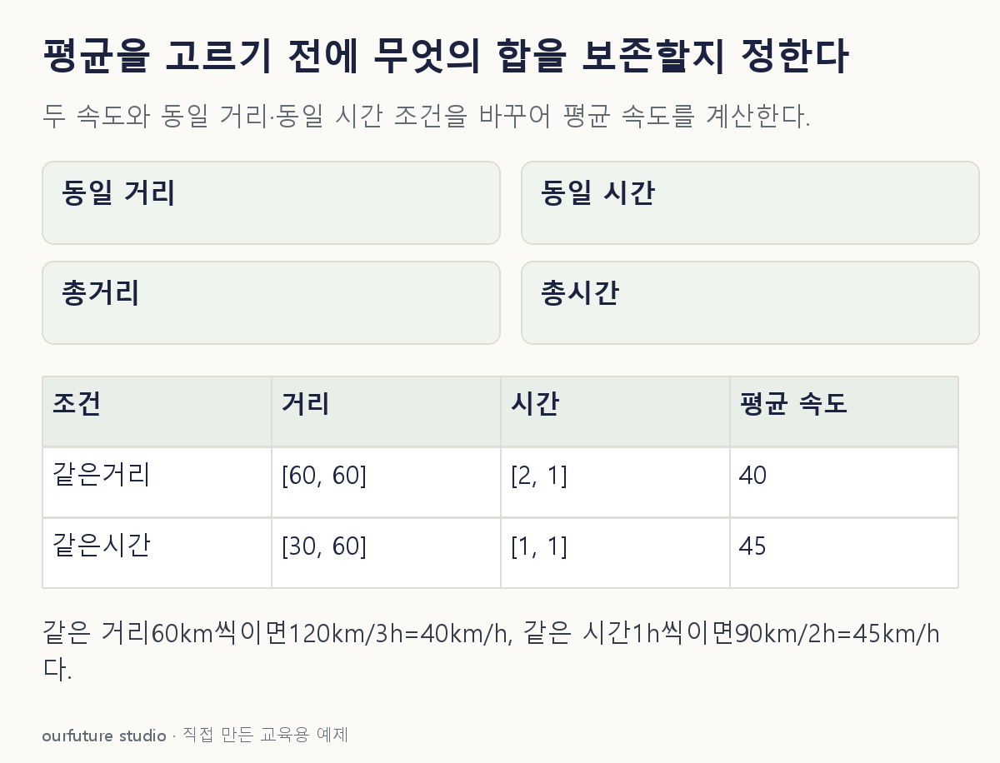

핵심 이론
산술평균은 값을 더한 뒤 개수로 나눈다. 같은 길이의 시간 동안 달린 두 속도라면 이동 거리를 합산한 평균 속도가 산술평균과 맞는다. 그러나 같은 거리를 서로 다른 속도로 이동했다면 각 구간의 소요 시간이 달라진다. 이때 평균 속도의 정의인 총거리/총시간부터 계산해야 한다.
같은 거리 60km를 시속 30km와 60km로 각각 이동하면 시간은 2시간과 1시간이다. 총거리 120km를 3시간에 이동했으므로 평균 속도는 40km/h다. 동일 거리의 속도 평균이 조화평균 2/(1/30+1/60)과 연결되는 이유다. 두 속도의 산술평균 45는 같은 시간 가중의 다른 상황에 해당한다.
기하평균은 양수 값의 곱을 보존하는 평균이다. 성장배율 1.2와 0.8을 연속 적용하면 총배율은 0.96이며 기간당 같은 배율은 √0.96이다. 성장률 숫자를 그대로 곱하지 말고 배율로 바꿔야 한다. 어떤 평균이 더 크다는 순서를 외우기보다 분모와 가중 조건을 먼저 명시해야 한다.
작은 예제로 확인하기
왕복 방향 효과는 없고 두 구간의 거리만 같다고 가정한다.
| 구간 | 거리(km) | 속도(km/h) | 시간(h) |
|---|---|---|---|
| A | 60 | 30 | 2 |
| B | 60 | 60 | 1 |
거리 합 120을 시간 합 3으로 나누어 평균 속도 40을 얻는다. 속도 두 개를 단순히 더해 나누는 조건이 아니다.
그림으로 확인하기

직접 고르기
같은 거리 60km씩을 시속 30km와 60km로 이동했다. 정차 시간은 없다.
전체 평균 속도는 몇 km/h인가?
- 1. 30
- 2. 40
- 3. 45
- 4. 60
정답과 오답의 이유 확인하기
정답 2번 — 40
총거리 120km, 총시간 60/30+60/60=3h이므로 40km/h다.
- ① 느린 구간 속도만 골랐다.
- ③ 같은 시간일 때의 산술평균을 같은 거리 조건에 적용했다.
- ④ 빠른 구간 속도만 골랐다.
조건 하나 바꾸어 풀기
두 속도로 각각 1시간씩 달린 조건으로 바꾸면 평균 속도는?
풀이: 45km/h
총거리 30+60=90km, 총시간 2h다. 같은 시간 가중에서는 산술평균과 일치한다.
다시 떠올릴 단서
속도 평균은 총거리 나누기 총시간에서 시작한다.
근거와 적용 조건
- NIST: Measures of Location — Definitions of mean・median. 확인일 2026-10-30.
- SciPy: hmean — Definition・Notes. 확인일 2026-10-30.
- SciPy: gmean — Definition・Notes. 확인일 2026-10-30.
상황·수치·보기·조건 변경은 자체 교육 예제다. 민간 복원 문항의 공식 정답이나 실제 성능·학습 효과를 뜻하지 않는다.
읽은 내용을 적용해 보기
방향·정차·추가 시간은 없다. 성장배율의 기하평균을 속도 평균과 혼합하지 않는다.